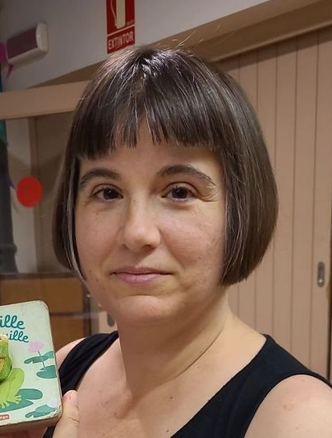

Gemma Boleda, ICREA Research Professor in the
Department of Translation and Language Sciences of the
Universitat Pompeu Fabra (Barcelona, Spain);
co-director of the Computational Linguistics and Linguistic Theory (COLT) research group. You can reach me via email at firstname.lastname@upf.edu or snail mail here.
I want to understand how language works; in particular, how humans convey meaning through language, how the formal properties of language support communication, and how languages are shaped by both cognitive and communicative factors. I study these dynamics in a range of domains and phenomena, with special emphasis on the lexicon (vocabulary), and I investigate which aspects are universal across languages, and what governs variation. My team and I work with a cross-disciplinary approach that integrates methodologies from Linguistics, Artificial Intelligence, and Cognitive Science. Our approach requires large amounts of data, and part of our work involves gathering linguistic data on a large scale.
I teach Computational Semantics in the Master's in Theoretical and Applied Linguistics.
I suffer from a psychiatric illness, and I didn't dare put this on my webpage until I got a permanent position.
★
We're releasing version 2.2 of ManyNames, a dataset with multiple names per image for 25K naturalistic images! Play with it here.
★
Thinking of applying for an ERC grant, or a post-doctoral fellowship in Europe? Here you will find successful applications in case that helps.
★
Want advice on pursuing an academic career? Check this.
sample publications
- Boleda, G. 2025.
LLMs as a synthesis between symbolic and continuous approaches to language.
To appear in Findings of the ACL.
- Gualdoni, E., G. Boleda. 2024.
Why do objects have many names? A study on word informativeness in language use and lexical systems.
EMNLP 2024.
[bib]
- Brochhagen, T., G. Boleda, E. Gualdoni, Y. Xu. 2023.
From language development to language evolution: A unified view of human lexical creativity.
Science, 381:431-436.
[pre-print]
- Gualdoni, E., T. Brochhagen, A. Mädebach, G. Boleda. 2023.
What's in a name? A large-scale computational study on how competition between names affects naming variation.
Journal of Memory and Language, 133:104459.
- Brochhagen, T., G. Boleda. 2022.
When do languages use the same word for different meanings? The Goldilocks Principle in colexification.
Cognition, 226:105179.
[video]
- Westera, M., A. Gupta, G. Boleda, S. Padó. 2021.
Distributional models of category concepts based on names of category members.
Cognitive Science, 45(9):e13029.
- Boleda, G. 2020.
Distributional Semantics and Linguistic Theory. Annual Review of Linguistics, 6:213-23. [pre-print]
- Silberer, C., S. Zarrieß, M. Westera, G. Boleda. 2020.
Humans Meet Models on Object Naming: A New Dataset and Analysis.
COLING 2020.
- Del Tredici, M., R. Fernández, G. Boleda. 2019.
Short-term meaning shift: a distributional exploration.
NAACL-HLT 2019.
- McNally, L., G. Boleda. 2017.
Conceptual Versus Referential Affordance in Concept Composition.
In Yoad Winter & James Hampton (eds.) Compositionality and Concepts in Linguistics and Psychology 245-267. Springer.
- Boleda, G. and A. Herbelot. 2016.
Formal Distributional Semantics: Introduction to the Special Issue. Computational Linguistics 42:4, 619-635.
- Boleda, G., S. Schulte im Walde, T. Badia. 2012. Modeling
regular polysemy: A study of the semantic classification of Catalan
adjectives. Computational Linguistics 38(3):575-616.
- Bruni, E., G. Boleda, M. Baroni, N. K. Tran. 2012.
Distributional semantics in technicolor. ACL 2021.
- Sánchez Marco, C., G. Boleda, L. Padró. 2011.
Extending the tool, or how to annotate historical language varieties.
5th ACL-HLT Workshop on Language Technology for Cultural Heritage, Social Sciences, and Humanities.
- Sanromà, R., G. Boleda. 2010.
The Database of Catalan Adjectives.
LREC 2010.
- McNally, L. and G. Boleda. 2004. Relational adjectives as properties of kinds.
Empirical Issues in Syntax and Semantics 5, 179-196.